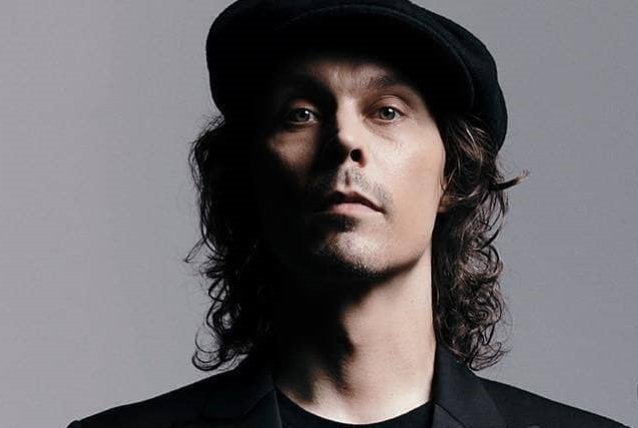
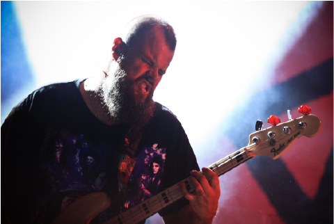
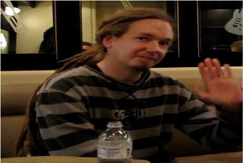
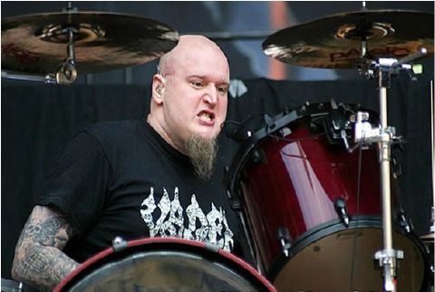
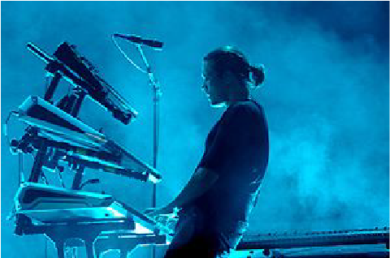

Who is H.I.M. ?
HIM (sometimes stylized as H.I.M.) was a Finnish gothic rock band from Helsinki, Finland. Formed in 1991 by vocalist Ville Valo and bassist Mikko "Mige" Paananen under the name His Infernal Majesty, the band broke up in 1993, before being reformed in 1995 by Valo and guitarist Mikko "Linde" Lindström. After being rejoined by Mige, as well as new additions keyboardist Antto Melasniemi and drummer Juhana "Pätkä" Rantala, the band, now called HIM, released their debut album Greatest Lovesongs Vol. 666 in 1997. In 2000, now with drummer Mika "Gas Lipstick" Karppinen and keyboardist Juska Salminen, the band released the album Razorblade Romance, which reached the number one spot in Finland, Austria and Germany. Their first single, "Join Me in Death", also charted at number one in Finland and Germany, eventually going platinum and gold respectively. Following the addition of Janne "Burton" Puurtinen on keyboards, HIM released Deep Shadows and Brilliant Highlights and Love Metal in 2001 and 2003 respectively. Both cracked the top ten in several countries, and allowed the band to tour the United Kingdom and the United States for the first time.
Ville Valo
Ville Hermanni Valo was born on 22 November 1976 in Helsinki, Finland.His mother Anita is from Hungary, and she worked at a shoe shop and later for the city of Helsinki. Ville's father Kari worked as a taxi driver, until he left his job and opened a sex shop in Helsinki called Aikuisten lelukauppa, where Ville sometimes worked as a teenager. Ville also has a younger brother Jesse, born in 1983. A few months after Ville was born, his family moved from Vallila to Oulunkylä, where he attended comprehensive school. Valo was first introduced to music through his father, who would often listen to a variety Finnish folk artists, such as Tuomari Nurmio and Tapio Rautavaara. At the age of eight, Valo bought the album Animalize by Kiss, which sparked his interest in music. After second grade, Valo was accepted to music class, where he took up playing the bass guitar, inspired by Gene Simmons. It was during this time that he met fellow bassist and future bandmate Mikko "Mige" Paananen. While still in school, Valo formed his first band called B.L.O.O.D., which played its first and only show in front of the music class. Around the age of ten, Valo joined the Eloveena Boys, for which he wrote his first song. In seventh grade, Valo met guitarist Mikko "Linde" Lindström and the two began playing together in Aurora, with Valo on the drums. During his time in Aurora, Valo also played bass and drums in various other bands and attended the Helsinki Pop & Jazz Conservatory. He also applied to the Sibelius Upper Secondary School of music and dance, but was rejected, and eventually dropped out of school altogether to concentrate on his music. From 1992 to 1993, Valo played bass in the Donits-Osmo Experience. Valo was permitted not to perform Finland's national military service, due to his asthma.
Mikko "Mige" Paananen
Mikko "Mige" Paananen was born on 19 December 1974 in Helsinki, Finland. His father was an oboist for the Helsinki Philharmonic Orchestra, while his mother worked as a freelance actor.Mige also has an older brother, nicknamed "Helmut". The Paananen family lived in Oulunkylä, where Mige went to school and met future bandmate Ville Valo. Mige's parents divorced when he was thirteen, and he moved to Tuusula with his mother. While attending the Sibelius Upper Secondary School, Mige moved to Kallio for a year to live with a friend. He then moved to Vallila, where he lived alone for some time, before moving back to live with his mother in Tuusula. Mige began playing drums at age ten, before switching to guitar and eventually bass. He eventually graduated from the Sibelius Upper Secondary School of music and dance. Mige's parents initially discouraged their son's interest to pursue a musical career, but eventually warmed-up to the idea. Mige also attend gardening school and for a while worked as a gardener for the city of Helsinki.
Mikko "Linde" Lindstrom
Mikko Viljami Lindström was born on August 12, 1976, in Klaukkala, Finland. Lindström's father was an engineer, while his mother worked for Finnair.Lindström also has a younger brother who was born in 1980. Lindström first became interested in music as a child from hearing cassettes of Elvis Presley in his father's car. At age 10, Lindström received a Landola acoustic guitar for Christmas, and immediately began taking lessons.The first thing he learned was the opening riff of "Heaven's on Fire" by Kiss. Some of Lindström's early influences also included Steve Vai, Jimi Hendrix, Black Sabbath and Led Zeppelin. Lindström met future HIM-bandmate Ville Valo in seventh grade at the Oulunkylä comprehensive school.The two later began playing together in a band called Aurora. At age 15, Lindström also attended the Berklee College of Music in Boston for two months. As a teenager, Lindström was also arrested twice. The first arrest came when Lindström and a group of friends were charged with theft and breaking-and-entering for breaking the windows of a rehabilitation center for war veterans, and sneaking in to swim in the establishment's pool. The second arrest came, when, at age 15, Lindström was caught driving under the influence. Lindström applied to the Sibelius Upper Secondary School of music and dance, but was rejected, and began attending Käpylä night school, from where he eventually graduated. Lindström was permitted not to perform Finland's national military service, as he was deemed "insane, incapable for warfare."
Mika "Gas Lipstick" Kristian Karppinen
Born in Eskilstuna, Sweden to Finnish parents, at age thirteen Karppinen moved to Finland with his family. He was a session drummer for one tour with the Finnish band named Tarot (known as project band of Marco Hietala - Nightwish). Before joining HIM, he was also a member of Kyyria, which included Santeri Kallio and Niclas Etelävuori from the Finnish band Amorphis and singer Ville Tuomi of Suburban Tribe. He sang and played guitar in a Thrash Metal band called Dementia, including guitarist Roope Latvala of Children Of Bodom. He also was a drum tech for Stratovarius at one point and was on the Stratovarius DVD for a couple of parts.
Janne "Burton" Puurtinen
Janne "Burton" Puurtinen was born on 17 October 1974, in Helsinki, Finland. Born to an artistic family, both Burton's parents were ballet dancers, as was his sister.Burton himself took up ballet for a few years, but quit due to a lack of interest, after which he began taking classical piano lessons at the age of five, which he continued well into his twenties.During his civilian service, Puurtinen worked as a lighting engineer at the Alexander Theater in Helsinki. He later worked as a stage manager at the Helsinki Opera House, a concert janitor at the Sibelius Academy, as well as a cook.
H.I.M.'s popular friends:
As their music arose, so did their friendships. The band, mainly the singer, Ville Valo, made connections to well known faces. He was relatively close with Bam. Bam at the time, early 2000's, had his own show "viva la bam" which he used H.I.M. music as his background scenes. The show gain popularity, hence lead for H.I.M.'s audience to grow larger reaching the US.